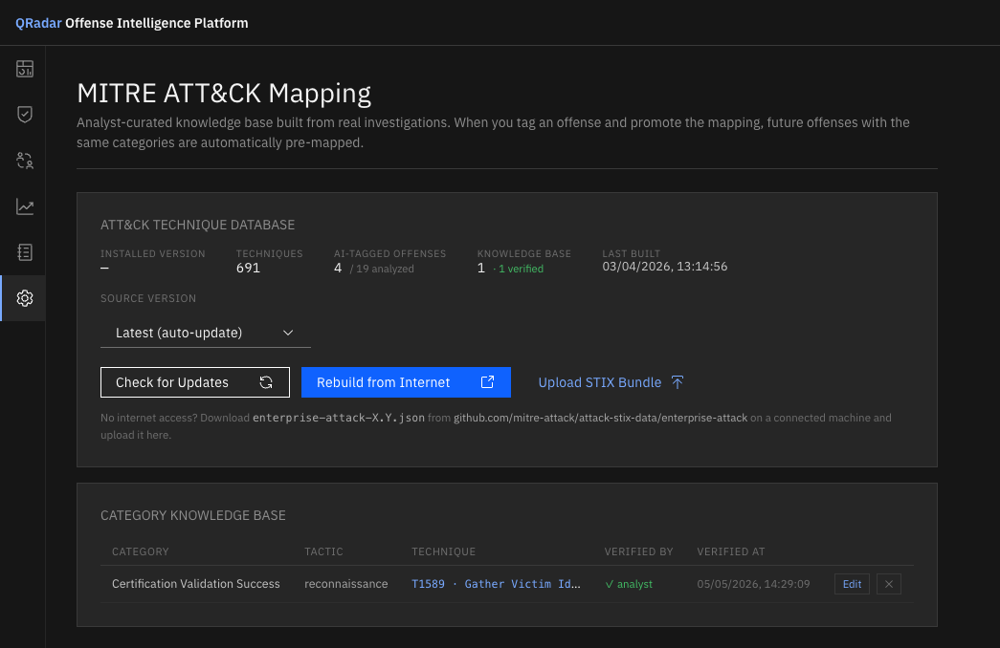
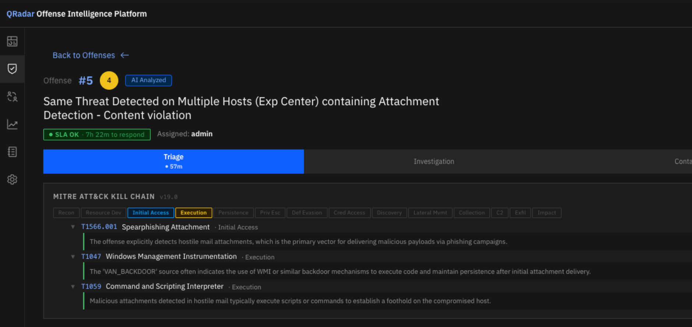

MITRE ATT&CK¶
Overview¶
QRadar Offense Intelligence integrates the MITRE ATT&CK framework at two levels:
- Per-offense technique tagging — the on-device LLM identifies which ATT&CK techniques apply to each analyzed offense, validated against a local ATT&CK knowledge base
- Campaign kill chain — technique tags across member offenses are aggregated into a kill chain progression visible on the Campaigns page
All ATT&CK data is stored and processed locally. No external lookups are made at query time.
Building the ATT&CK Database¶
Before technique tagging can run, you must build the local ATT&CK knowledge base.
Connected environments¶
- Navigate to Settings → MITRE ATT&CK
- Click Build Database
- The app downloads the current ATT&CK STIX 2.1 bundle from MITRE and parses it into the local database
This takes approximately 30–60 seconds. The database version and build date are shown after completion.
Air-gapped environments¶
- On a connected machine, download the ATT&CK STIX 2.1 bundle from https://attack.mitre.org/ (Enterprise ATT&CK JSON)
- Transfer the file to a machine that can reach the QRadar web interface
- Navigate to Settings → MITRE ATT&CK → Upload Bundle
- Select the downloaded JSON file and click Upload
Automatic Technique Tagging¶
The MITRE ATT&CK Tagger is a scheduler job that runs nightly (default: 03:00) and tags all AI-analyzed offenses that have not yet been tagged.
For each offense, the tagger:
- Sends the offense description, categories, and AI analysis verdict to the on-device LLM
- Asks it to identify the most applicable ATT&CK techniques
- Validates each returned technique ID against the local knowledge base — invalid or hallucinated IDs are corrected or discarded
- Writes results to the
offense_mitre_tagstable with technique ID, name, tactic, tactic order, confidence score, and reasoning
The tagger yields immediately if a human-triggered analysis is queued — it never competes with analyst-initiated work.
Triggering manually¶
To run the tagger on demand: Settings → Job Scheduler → MITRE ATT&CK Tagger → Run Now.

MITRE ATT&CK settings — database version, category-to-technique mappings, and upload option for air-gapped environments.Viewing Technique Tags on an Offense¶
Technique tags appear as tactic chips in two places:
- Offense Detail → Overview tab — a kill chain bar showing the tactic progression for this offense
- Offense Detail → AI Analysis tab — technique tags listed alongside the analysis
Each chip shows the tactic name and technique ID (e.g. T1059 Command and Scripting Interpreter). Hovering shows the full technique name and confidence score.

Kill chain bar on Offense Detail — tactic chips in ATT&CK order with technique IDs.Analyst Overrides¶
If the AI-assigned technique is incorrect, analysts can override it.
- On the Offense Detail page, click Edit MITRE Tags (pencil icon next to the kill chain bar)
- Search for the correct technique by name or ID
- Select it — the override replaces the AI tag for this offense
- Optionally click Promote to Knowledge Base to share the mapping with the team
How overrides work¶
Overrides are stored in a separate offense_mitre_overrides table and take precedence over AI tags in all views. The original AI tag is preserved and can be restored if needed.
Category Mappings¶
The Category Mappings section under Settings → MITRE ATT&CK shows the team's shared knowledge base: a mapping of QRadar event categories to ATT&CK techniques.
These mappings are: - Populated automatically when analysts promote verified override mappings - Used by the tagger as additional context when tagging offenses with those categories - Editable by any analyst — you can add, update, or remove mappings
| Column | Description |
|---|---|
| Category | QRadar event category name |
| Technique ID | ATT&CK technique (e.g. T1078) |
| Technique Name | Human-readable technique name |
| Tactic | ATT&CK tactic |
| Confidence | 0.0–1.0 confidence score |
| Verified | Whether a human analyst has verified this mapping |
Tactic Order Reference¶
Tactics are ordered by ATT&CK kill chain stage. This order is used to sort the kill chain bar and campaign tactic progression:
| Order | Tactic |
|---|---|
| 1 | Reconnaissance |
| 2 | Resource Development |
| 3 | Initial Access |
| 4 | Execution |
| 5 | Persistence |
| 6 | Privilege Escalation |
| 7 | Defense Evasion |
| 8 | Credential Access |
| 9 | Discovery |
| 10 | Lateral Movement |
| 11 | Collection |
| 12 | Command and Control |
| 13 | Exfiltration |
| 14 | Impact |